Leaves in the fall, snow in the winter. We handle both.
Wexmoor Lawn & Snow is a small Naperville crew that keeps yards clean through leaf season and driveways open all winter. We know these streets because we live on them, and we come back to the same houses year after year.
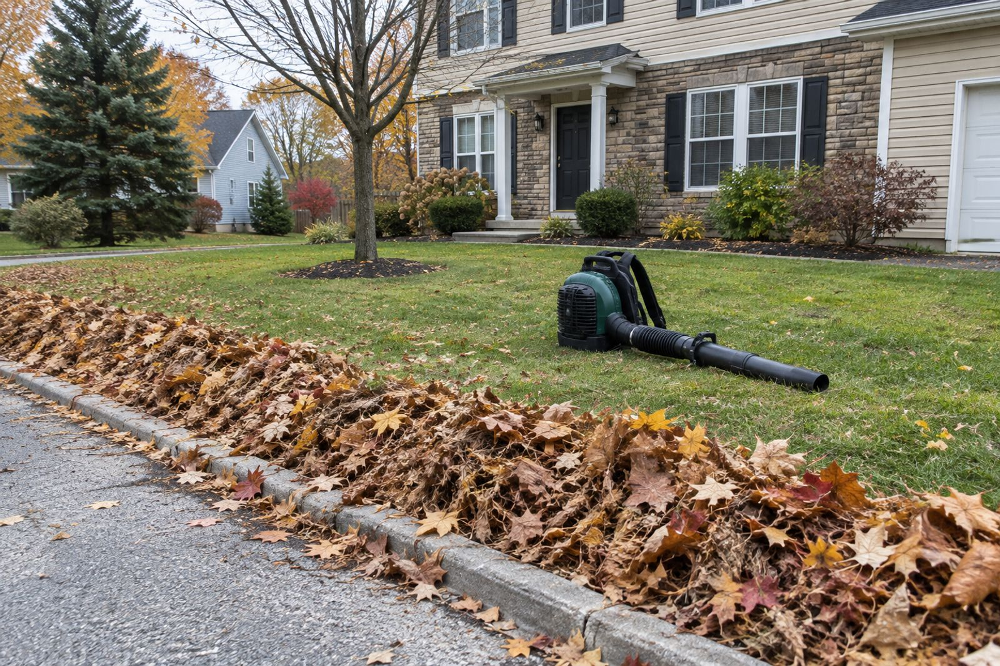
What we do
In October and November we rake, blow and haul away leaves, cut back perennials, aerate tired lawns and put the beds to sleep with fresh mulch. When the first real snow comes we switch the trucks over to plows and keep a route of driveways, walks and steps clear before you leave for work.
Licensed and insured. Serving Naperville since 2009. 5-star rated by 140 Naperville neighbors. Every fall cleanup is guaranteed: if leaves blow back in from your own trees within a week, we come back for free.
Recent work around Naperville
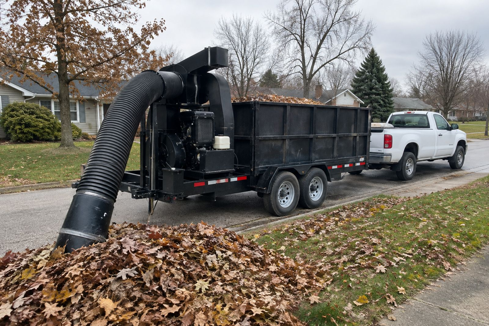
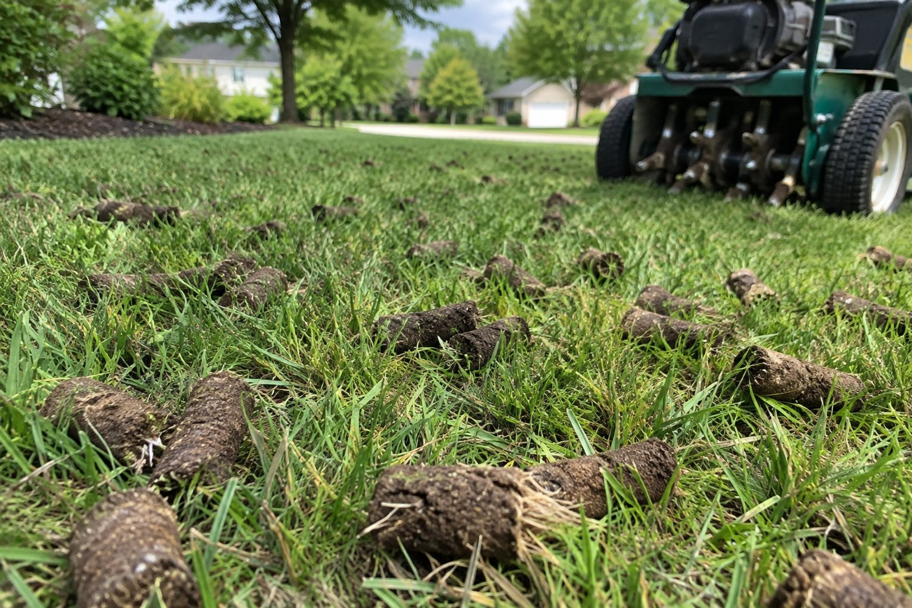
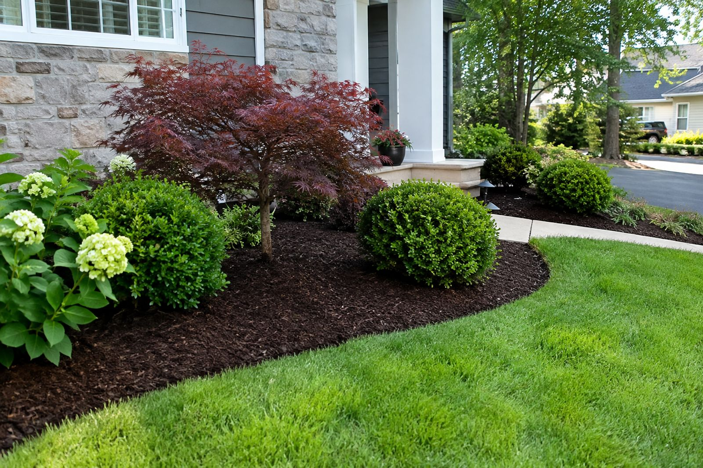
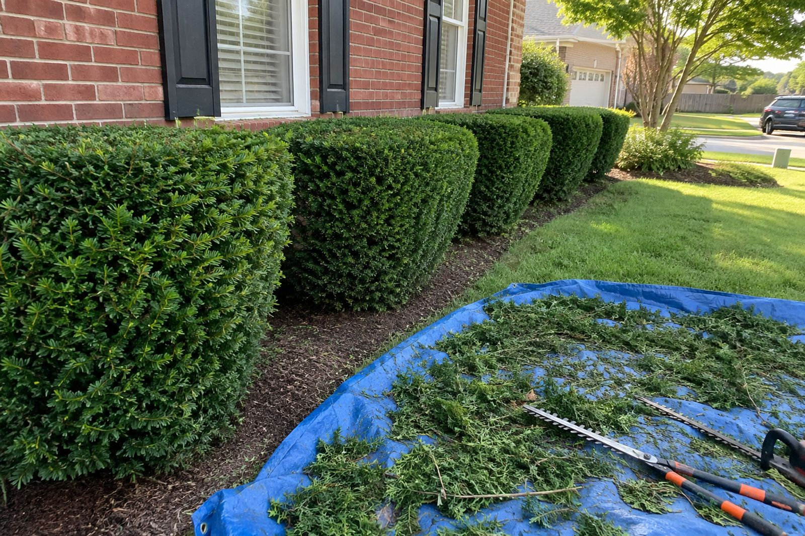
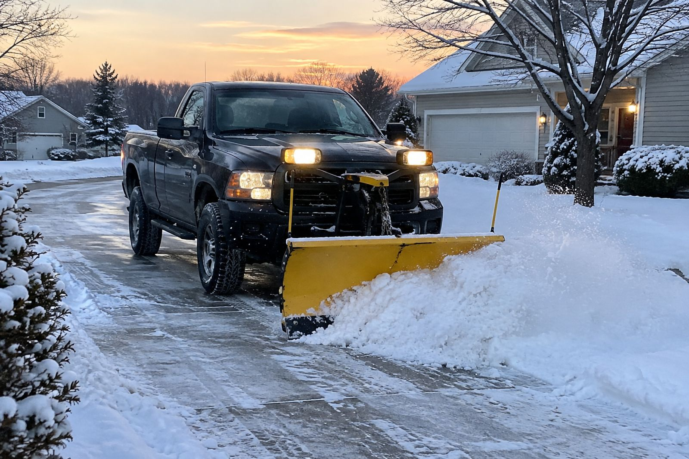
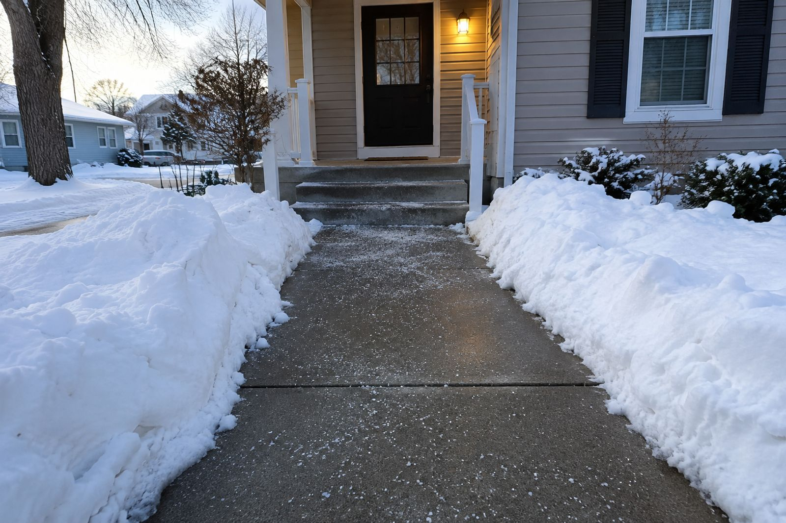
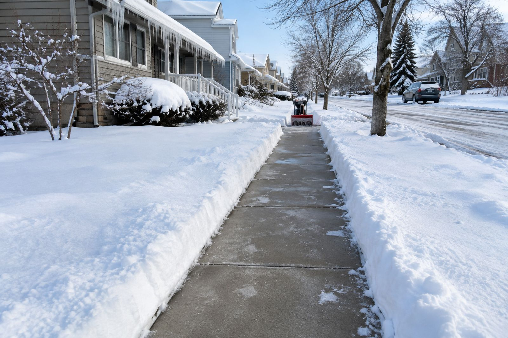


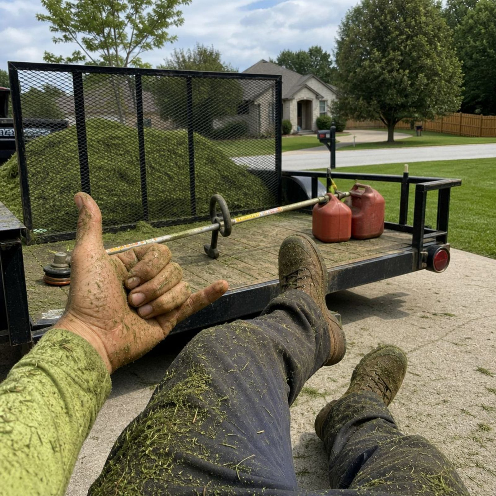
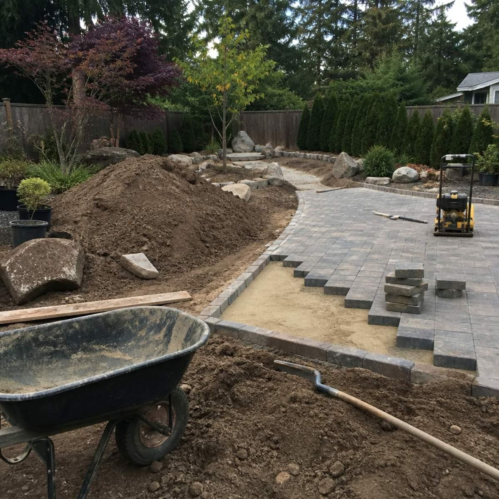
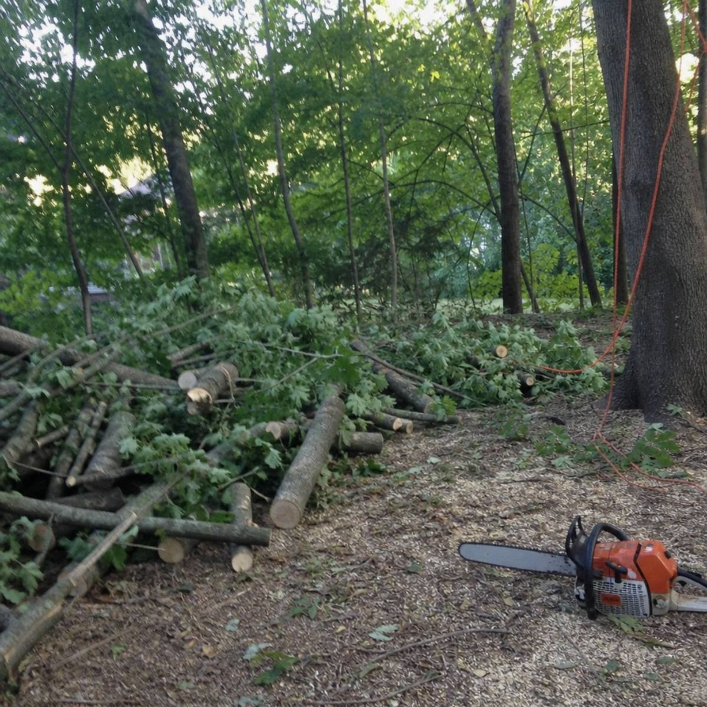
“They showed up the morning after the big storm before I even had my coffee. The driveway was done and the steps were salted.” Pat R., Naperville
Snow contracts for the season run from November 15 to April 1. Fall cleanup spots fill up by early November, so call or text to get on the list.